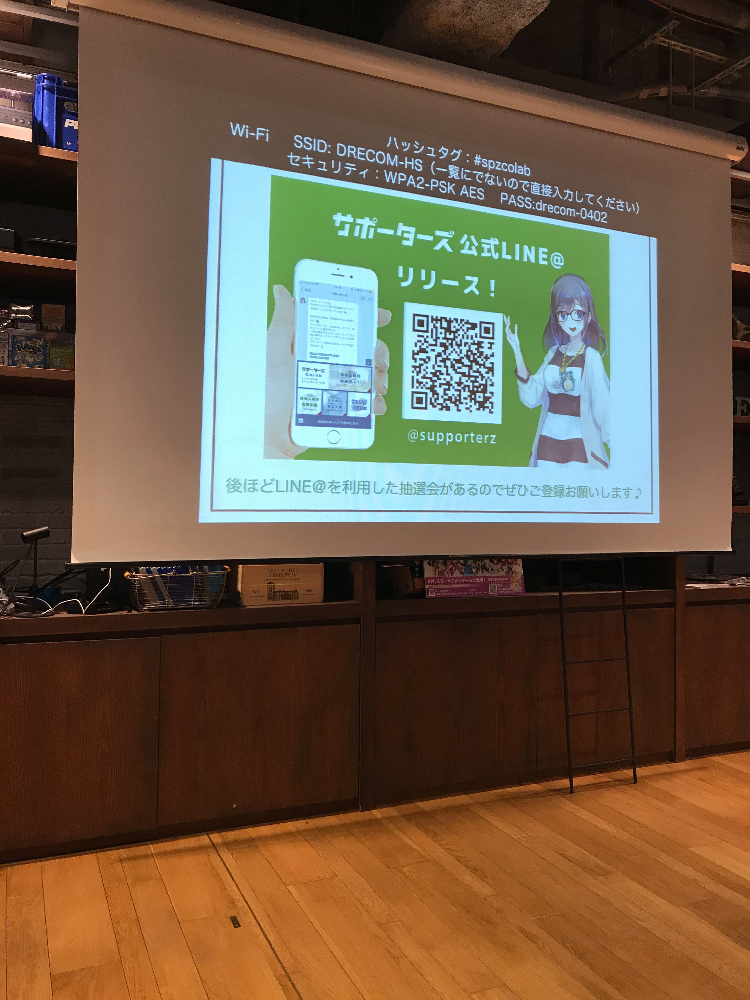

『20代エンジニアのためのプログラマー勉強法』から受け取った3つの学び
◆はじめに
2019/3/30 にサポーターズが主催するイベントでmatzさんの講演があるということで、参加してきました。
テーマは『20代エンジニアのためのプログラマー勉強法』です。
今回は、セミナーに参加してみた感想を書いていきます。
▼会場の様子
会場はこんな感じでした。かなりオシャレだと思いました！


会場には、パッと見て大体100名前後の参加者が集まり、みな真剣な表情で講演を聴いていました。
▼株式会社サポーターズ
株式会社サポーターズは「カッコイイオトナを増やす」を合言葉に、
企業向け・学生向けの就職活動支援を積極的に行なっている会社です。
このセミナーが始まる前に、代表取締役の楓 博光（かえで ひろあき）さんからお話をいただき、
サポーターズで取り組んでる活動を伺いました。
個人的には、就職活動支援の一環として「サポーターズ主催の企業説明会・セミナー参加者へ交通費の補助を行なっている」という話に感動しました。
累計支援額が3億円にも上ると伺い、サポーターズの熱意に殊更すごいと思いました。
楓さん自身の印象は、お話されているお姿から快活・聡明そうな印象を受けました(^^)
(二郎ラーメンのお話の際は、とてもユニークですね笑)
▼株式会社ドリコム
会場は、株式会社ドリコムのスペースをお借りしての開催でした。
ドリコムは、ゲームのプラットホーム開発などの開発を行っている会社です。
最新の技術も積極的に開発に取り入れるそうで、社内で勉強会も活発に開催されているとのこと。
◆3つの学び
matzさんの講演の中で、個人的に感じ取った学びは次の3点です。
- 自分の棚卸し
- 有名になる
- アウトプットする
それぞれ一つずつ見ていきましょう。
▼1つ目：自分の棚卸し
「自分の棚卸し」とは、
- 自分が何に興味を持っているか
- どんなことをやりたいと思っているのか
- 今までどんなことに興味がらあるのか
こういった観点から自身のことを見つめ直す作業を指します。
なぜ棚卸しが必要かというと、次の理由があります。
①勉強の差別化を図る
②自分が積極的に取り組める分野を探る
①は、「自分の競争相手がみんな勉強(努力)をしている」と仮定した場合、
漫然と”みんなと同じ勉強”をしているだけでは、自身の価値が高くならないから差別化が必要になります。
勉強するなら「自分しかやりたがらないこと」を勉強すると、競争相手も少なくなるので、差別化しやすくなります。
②は、「社会人が取り組む問題に完璧な正解はない(故に上限がない)」というお話に関連して、
“自分の好きなこと・得意なことを伸ばすのが成功の近道なのでは？”という提案です。
自分の好きなことや得意なことを知るためにも、棚卸しが必要となります。
▼2つ目：有名になる
matzさん曰く、「人は成功者・有名人に弱い」(影響のある人間に従いやすくなる傾向にある)らしいです。
このことから、自分のやりたい仕事をする(あるいは仕事を得る)ためには、手っ取り早い話が”有名になること”。
じゃあ有名になるためにはどうすれば良いのか。3つ目のポイントに続きます。
▼3つ目：アウトプットする
「有名になるためにはどうすれば良いのか」、それは”アウトプットを続けること”が大切なそうです。
しかし、慣れない人は、なかなかアウトプットまで踏み出すまでに壁を感じます(僕もそうでした)。
そんな心理状態にオススメなのが、”クオリティは棚上げしてしまう”こと。
一般的には「クオリティの高いものを作らなきゃアウトプットできない」と考えてしまいがちですが、
不慣れなうちは”とにかくアウトプットすること”を考えていった方が良いらしいですね。
これは、アウトプットを続け、アウトプットが最適化されることで、同時にクオリティも上がっていくためです。
また、アウトプットを続けることで
「この人はこういうことに興味があるのか(こんなことができるのか)」
と周囲に認知されやすくなります。
つまり、”アウトプット→認知”のサイクルを繰り返すことで、有名になりやすくなるそうです。
◆終わりに
今回、matzさんのお話を伺って、アウトプットの大切さを改めて知ることができました。
もともと「アウトプットの重要性」は、聞いたことのある話ですが、
2つ目のポイントに書いた”有名になる”まで考慮したことなかったので、
アウトプットがさらに重要な作業だということを再認識しました。
僕も今回の発表で聞いた話をどんどん実践して、スキルアップしていきたいと思います！